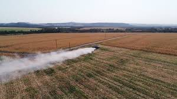

Produção no Campo
A produção no campo está ligada principalmente às atividades agropecuárias. Envolve o cultivo de alimentos, criação de animais e extração de matérias-primas naturais.
- Agropecuária (plantio e criação)
- Produção em grande escala e sazonal
- Uso de máquinas e técnicas agrícolas
- Importância na exportação de alimentos